Introduction.
In this work we present a new efficient calculation method for the far
field amplitude patterns that arise from scattering problems governed by
the  -dimensional Helmholtz equation. The calculation of the far field
mapping is typically a two step process. First a Helmholtz problem with
absorbing boundary conditions (PML, ECS) is solved on a finite numerical
box covering the object of interest. In the second step a volume integral
over the Green's function involving the numerical solution yields the
angular dependency of the far field amplitude. The main computational
bottleneck generally lies within the first step, since it requires a
suitable (iterative) method for the solution of a high dimensional
indefinite Helmholtz system.
-dimensional Helmholtz equation. The calculation of the far field
mapping is typically a two step process. First a Helmholtz problem with
absorbing boundary conditions (PML, ECS) is solved on a finite numerical
box covering the object of interest. In the second step a volume integral
over the Green's function involving the numerical solution yields the
angular dependency of the far field amplitude. The main computational
bottleneck generally lies within the first step, since it requires a
suitable (iterative) method for the solution of a high dimensional
indefinite Helmholtz system.
Preconditioned Krylov subspace methods are currently among the most efficient numerical algorithms for the solution of high dimensional positive definite systems. A generalization of this approach led to the development of the Complex Shifted Laplacian (CSL) preconditioner, proposed in [1] as an effective Krylov subspace method preconditioner for Helmholtz problems. The key idea behind CSL is the formulation of a perturbed Helmholtz problem which includes a complex valued wave number. This implies a damping in the problem, thus making the preconditioning system solvable using multigrid in contrast to the original Helmholtz problem. Recently a variation on CSL by the name of Complex Stretched Grid (CSG) was proposed [2], introducing a complex valued grid distance (complex rotation) in the preconditioner.
The far field map computation proposed in this work reformulates the standard real-valued Green's function integral expression for the far field amplitude on a complex contour. Hence, one requires the solution of the Helmholtz equation on a complex contour. It is shown that the latter problem is equivalent to a CSL problem that can be solved very efficiently using a multigrid method. However, whereas CSL was previously only used as a preconditioner, the proposed complex-valued far field map calculation effectively allows for multigrid to be used as a solver.
The far field map for Helmholtz problems.
The Helmholtz equation is a mathematical representation of the physics behind a wave scattering at an object
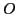
located within a domain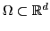
. The equation is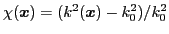
represents the object of interest. Note that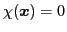
for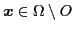
. The above equation can in principle be solved in a numerical box (i.e. a discretized subset of ) covering the support of , with absorbing boundary conditions along all boundaries, yielding a numerical solution denoted by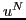
. The far field scattered wave then satisfies the following inhomogeneous Helmholtz equation with constant wave number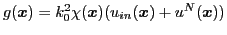
. The analytical solution to the above equation is given by the Green's integral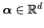
isCalculation on a complex contour.
The above far field integral expression can be split into a sum of two contributions
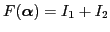
, where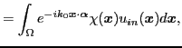 |
(6) | |
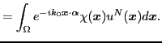 |
(7) |
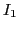
is generally easy, since it only requires the expression for the incoming wave. The second integral however requires the solution of the Helmholtz equation on the numerical box, which is known to be notoriously hard to obtain using present-day iterative methods. However, if both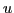
and are analytical functions, the integral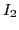
can be calculated over a complex contour defined by the rotated real domain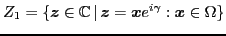
, where is a fixed rotation angle, followed by the curved segment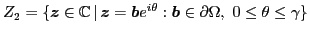
, closing the contour. The integral can then be written as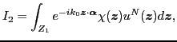 |
(8) |
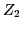
has vanished because is per definition zero everywhere outside , thus notably in all points of . The advantage of this approach is that we only need the value of evaluated along this complex contour, where the original Helmholtz problem is reduced to a damped equation. This problem is equivalent to a CSL problem, and can thus be solved very efficiently using multigrid, resulting in a fast and scalable computation of the far field mapping. The new approach is successfully validated on model problems in two and three spatial dimensions, where its effectiveness and scalability are demonstrated.References.
[1] Y.A. Erlangga, C.W. Oosterlee and C. Vuik, On a class of preconditioners for solving the Helmholtz equation, App. Num. Math., 50(3-4), 2004, pp. 409-425.
[2] B. Reps, W. Vanroose and H. bin Zubair, On the indefinite Helmholtz equation: Complex stretched absorbing boundary layers, iterative analysis, and preconditioning, J. Comput. Phys., 229(22), 2010, pp. 8384-8405.
[3] S. Cools, B. Reps and W. Vanroose, An efficient multigrid calculation of the far field map for Helmholtz problems, arXiv:1211.4461.